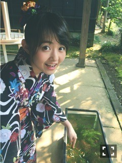
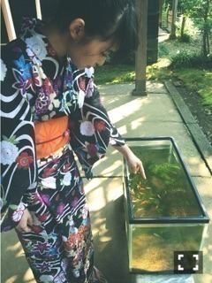
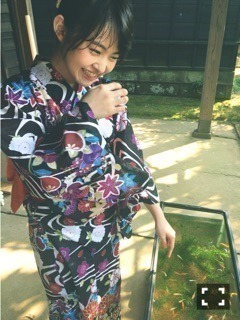
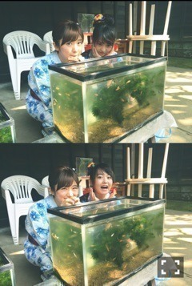

| 2016/07 24 Sun | はじまった。729回目 |
真夏の全国ツアースタートしました。
22、23日は大阪城ホールで3公演！
去年と景色が違う大阪城ホール。
来てくださったみなさん、
本当にありがとうございました！
新体制の乃木坂。
なんでかわかんないけど、
二日間ともオープニングもラストも
涙が出そうでした。
それよりなにより玲香！！
の大きさを実感した公演だった。
玲香に会いたい！

良き95年組。
真洋21歳、おめでとう（≧∇≦）
生駒おつかれさま！
気を引き締めて
8月も全国ツアー楽しみます。
メンバー全員で完走できますように。
万理華ちょー楽しそうだった
って言われますように。
発売中のB.L.T.
乃木坂46全員で浴衣です(^L^)

金魚！！！！！！


と思ったら
「メダカなんですよねえ」
と言われるオチ
メダカ！！！！！！

涼しげー
やっぱ浴衣いいわねo(^_^)o
昨日のライブで発表されました！
アンダーライブ全国ツアー2016
〜中国シリーズ〜
9月22日 広島(広島文化学園HBGホール)
9月23日 岡山(倉敷市民会館)
9月24日 山口(周南市文化会館)
全国ツアー初参戦！
ぜひともよろしくお願いします（≧∇≦）
そして10月8日に開催される
「GirlsAward 2016 AUTUMN / WINTER」
乃木坂から9人も出演します。
非常に、もう非常に恐れ多いですが、
私も出演します。
今からドキドキしてます、、
初めてのことや積み重ねてきたこと含め、
いろいろな挑戦をしていく下半期て感じ。
焦ってはいけないけど、
早く大きなものにしたいです！
感謝の意を込めてみなさんに伝えたいなー
まりか
コメント(580)
2016/07/24 13:42